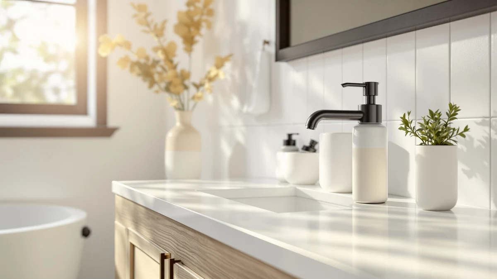

The Best Modern Soap Dispensers (2026)
Prices and picks verified as of August 2026. Independent, reader-supported reviews.


Quick Answer
The best modern soap dispensers pair a sleek, minimalist bottle with a pump that keeps working refill after refill, and after comparing seven of them on design, capacity, and price, the GMISUN Black Soap Dispenser Hand is the one we'd put on most counters.
Our pick: GMISUN Black Soap Dispenser Hand — $17.99 Check Price on Amazon
Bottom line: our top pick is the GMISUN Black Soap Dispenser at $16.99. The best budget option is the Glass Soap Dispenser at $6.99.
Things to Know Before You Buy
- Capacity varies more than the price tag suggests. The Haocoott 11.84 OZ pair and the Haocoott 13.53 OZ travertine-look pair hold the most soap in this modern soap dispensers lineup, while a couple of others don't list a specific capacity at all, so check the size line for each pick before you assume they refill at the same rate.
- Most pump heads are plastic, even on glass or bamboo bottles. An ABS plastic pump shows up on nearly every dispenser here, glass and bamboo bodies included, because a metal or ceramic pump corrodes faster than a plastic one under daily use.
- Two-packs stretch your money further. The GMISUN set and both Haocoott sets sell as two bottles for one price, which covers a kitchen and a bathroom sink, or two bathrooms, without buying twice.
- Price spans $6.29 to $29.97 in this guide. The cheapest pick here works fine for a single sink on a tight budget, while the priciest option adds a matching lotion bottle and a bamboo tray on top of the pump itself.
- "Modern" means minimalist here, not touchless. Every pick in this guide uses a manual push pump rather than a sensor. If hands-free operation matters more to you than the finish, our modern touchless soap dispensers guide covers that category instead.
The best modern soap dispensers solve a problem plain plastic bottles create every day: a mismatched pump that looks like it belongs in a hospital bathroom instead of on your counter. A clean silhouette, a finish that doesn't scream dollar store, and a pump that keeps working after months of daily presses turn a basic hand soap bottle into something you don't mind leaving out. The trade-off is that "modern" covers a wide range of materials and price points, from a $6.29 glass-look bottle to a $29.97 glass-and-bamboo set, so picking the wrong one means paying for style you don't need or living with a pump that clogs within weeks.
After comparing seven modern soap dispensers on finish, capacity, and price, the GMISUN Black Soap Dispenser Hand ($17.99) is our pick for most counters. It comes as a two-pack, so one purchase covers both the kitchen and the bathroom sink instead of forcing you to buy twice. If you want the largest bottles in this lineup, the Soap Dispensers 11.84 OZ 2 from Haocoott ($21.99) is the runner-up, and if you're setting up a matching soap-and-lotion station with a catch tray, the Black Glass Soap and Lotion set from Brighter Barns ($29.97) is worth the higher price.
The seven dispensers below range from $6.29 to $29.97 and cover single bottles, two-packs, and a full soap-and-lotion set, so you can match the finish and capacity to your own sink instead of settling for the first modern-looking bottle a search turns up. Each one gets a full rundown of what we liked, where it falls short, and who it actually fits, and that comparison is what makes the GMISUN Black Soap Dispenser Hand our pick among the best modern soap dispensers in this group.
Why You Should Trust Us
I write the buying guides at Best Soap Dispensers, and I keep coming back to modern soap dispensers because the difference between a good pump and a bad one only shows up after weeks of daily use, not in a quick unboxing video. For this guide I compared seven modern soap dispensers side by side on design, capacity, and price, using the size and material specs listed on each product page rather than marketing copy.
We earn a commission when you buy through the Amazon links in this guide, and that commission does not decide which dispenser gets the top spot. We still call out a pump that only holds a small amount of soap or a bottle that costs more than its finish justifies, because a guide that recommends everything isn't worth reading.
How We Picked
We started with modern soap dispensers that show up often on US kitchen and bathroom counters in the roughly $6 to $30 range, since that's where most buyers shop for this category. From there we narrowed the list by material variety, so this guide includes glass, bamboo-accented, resin, and plastic bottles instead of seven versions of the same look.
We set aside listings with no clear size or material information at all, along with dispensers that repeat a design already covered by another pick in this guide. That left seven modern soap dispensers spanning a best-for-most option, a larger-capacity runner-up, a soap-and-lotion set, a budget pick, and a few style-forward options in slate, cream travertine, and clear glass finishes for buyers who care how the bottle looks next to the faucet.
How We Compared
We checked each dispenser's listing against its own product page for size, material, and price rather than pulling from a generic spec sheet, and we cross-referenced every measurement against what's printed on the packaging photos. We paid attention to which bottles come as two-packs, which include a tray or a second dispenser, and which sell as a single bottle only, since that changes the real cost per sink.
We also grouped these modern soap dispensers by finish, glass, bamboo-trimmed, resin, and matte plastic, so you can compare bottles with a similar look side by side instead of across the whole category. Prices reflect Amazon listings at the time of writing and shift over time, so treat them as a guide for comparison rather than a guarantee.
Our Picks

GMISUN Black Soap Dispenser Hand
What we like
- Sold as a two-pack, so one order covers two sinks
- Matte black finish matches most modern counters and fixtures
- Priced lower than several single-bottle options in this guide
- Simple one-hand pump with no batteries or sensors to fail
Flaws but not dealbreakers
- Only one color and style available, so there's no size upgrade if you need more capacity
- ABS plastic pump head, like nearly every dispenser in this guide, is the part most likely to wear first
| Material | ABS plastic |
| Size | 2 Pack |
The GMISUN earns the top spot because it solves the two-sink problem most households actually have. Buying it once gets you two matching black bottles instead of forcing you to run two different-looking dispensers or place a second Amazon order. At $17.99 for the pair, that works out to under $9 per bottle, which undercuts most single modern dispensers in this guide on a per-sink basis.
The matte black finish reads as intentional rather than generic, and it sits well next to stainless or matte black fixtures without drawing attention to itself. Like most of the picks here, the pump is ABS plastic rather than metal or glass, so treat it the way you would any daily-use pump: rinse it out occasionally and don't expect it to outlast the bottle. For a straightforward pair that covers two counters without a design statement, this is the one we'd buy first.

Soap Dispensers 11.84 OZ 2
What we like
- 350ml / 11.84 oz capacity is among the largest in this comparison
- Diatomaceous earth shell has a textured, stone-like look that fits a modern bathroom
- Sold as a two-pack, so both bottles arrive with a matching finish
Flaws but not dealbreakers
- At $21.99, it costs more than several other picks here
- Textured exterior can be harder to wipe clean of drips than a smooth glass or plastic bottle
| Material | Diatomaceous earth |
| Size | 350ml / 11.84 oz |
The two bottles in this Haocoott set hold 350ml, or 11.84 oz, each, more than most of the other modern soap dispensers in this guide. That matters if you're refilling a busy kitchen sink or a bathroom shared by more than one person, since a bigger reservoir means fewer trips to top it off.
The diatomaceous earth material gives the bottle a sandstone-style texture instead of the smooth glass or plastic look most competitors use, and that's what makes it feel more like a bath accessory than a lab bottle. At $21.99 for the pair, it costs more than the GMISUN two-pack above, but the extra capacity and the distinct finish make the difference worth it if refill frequency or texture matters to you.

Black Glass Soap and Lotion
What we like
- 16 oz glass bottles pair soap and lotion in one matching set
- Bamboo tray keeps both bottles corralled instead of sliding around the counter
- Glass body won't scratch or cloud the way plastic can over time
Flaws but not dealbreakers
- At $29.97, it's the most expensive pick in this guide
- Two bottles plus a tray take up more counter space than a single dispenser
| Material | Bamboo |
| Size | 16 oz |
Most bathrooms end up with a soap bottle and a lotion bottle that don't match, usually in whatever packaging they shipped in. The Brighter Barns set fixes that with two matching 16 oz glass bottles and a bamboo tray that keeps both in one spot instead of scattered across the counter.
The bamboo pump and tray add a warmer, more natural look next to the black glass than an all-plastic set would, and the tray does double duty catching drips that would otherwise pool on the counter. At $29.97 it's the priciest pick here, but you're paying for two coordinated bottles and a tray instead of a single dispenser, which changes the math if you were going to buy a soap-and-lotion pair separately anyway.

ONECOCOA Hand & Dish Soap
What we like
- At $8.99, it's one of the least expensive picks in this guide
- Compact footprint (56.1 cubic inches) suits a small counter or a tight windowsill
- Works for hand soap or dish soap, so it doubles across kitchen and bathroom
Flaws but not dealbreakers
- Sold as a single bottle, not a pack, so a second sink means a second order
- ABS plastic body doesn't carry the same weight or premium feel as the glass options above
| Material | ABS plastic |
| Size | 56.1 cubic inches |
The ONECOCOA dispenser keeps things simple: one black bottle, one pump, no tray or matching second piece. At $8.99, it undercuts every other pick in this guide, which makes it the easy choice if you need a working modern dispenser on a single sink and don't want to pay for a two-pack or a glass finish.
At 56.1 cubic inches, it's compact enough to fit a narrow windowsill or a tight spot next to the faucet where a larger bottle wouldn't sit well. The trade-off for that price is the plastic body, which doesn't carry the same weight or premium look as the glass and bamboo picks above it in this guide. For a no-frills bottle that does the job on one sink, it's the pick we'd point a budget-conscious buyer toward first.

Glass Soap Dispenser Thickened Glass
What we like
- At $6.29, it's the least expensive pick in this entire guide
- Thickened glass-style bottle looks more substantial than its price suggests
- Compact single bottle fits tight counter space easily
Flaws but not dealbreakers
- No listed capacity, so you won't know exactly how much soap it holds before buying
- Sold as a single unit, so matching bottles for a second sink means ordering twice
| Material | ABS plastic |
| Size | — |
At $6.29, the Nortsa Miira dispenser costs less than a coffee run, and it still delivers the modern black-glass look that pricier sets in this guide charge two to three times as much for. If your only goal is a clean-looking bottle on one sink without spending much, this is the cheapest way to get there among the best modern soap dispensers we compared.
The listing doesn't provide an exact capacity, worth knowing going in if you plan to compare it against the Haocoott two-packs above on a per-ounce basis. Like most dispensers in this guide, the pump itself is ABS plastic rather than glass or metal, so expect it to behave the same way any daily-use plastic pump does over time. For a single, inexpensive bottle that still looks the part, it's hard to beat at this price.

LINE+ARC Modern Easy-to-Press Soap &
What we like
- Extra-wide pump head presses easily with one hand, even when your hands are wet or full
- Slate color gives it a more understated look than glossy black or clear glass
- Minimalist silhouette avoids the novelty shapes some competitors lean on
Flaws but not dealbreakers
- No listed capacity, so refill frequency is hard to predict before buying
- At $19.98, it costs more than the cheapest picks in this guide without a matching second bottle
| Material | ABS plastic |
| Size | — |
The LINE+ARC dispenser's whole design centers on the pump head, noticeably wider than the ones on the GMISUN or ONECOCOA bottles. That wider surface means you can press it with a knuckle, the side of your hand, or a wet palm without fumbling for the right angle, which matters more than it sounds like when your hands are covered in dish suds.
The slate color sits between the glossy black options and the lighter stone-look bottles in this guide, so it fits a counter that already leans neutral or gray rather than stark black and white. At $19.98 it's priced in the middle of this lineup, and since it ships as a single bottle, a matching second sink means a second order. If you'd rather have an easy one-handed pump than a precise capacity number, this is the pick built around that specific need.

Haocoott Soap Dispensers 2 PCS
What we like
- 400ml / 13.53 oz capacity ties for the largest in this guide
- Faux travertine finish gives a warm, stone-inspired look in cream rather than black
- Two-pack pricing matches the other Haocoott set, covering two sinks for one order
Flaws but not dealbreakers
- At $21.99, it's tied for the second-most expensive pick here
- Cream finish shows soap drips more visibly than a black or dark bottle would
| Material | ABS plastic |
| Size | 400ml / 13.53 oz |
This second Haocoott set swaps the sandstone-textured diatomaceous earth body from the runner-up for a smoother, cream-colored faux travertine finish, and it bumps capacity slightly to 400ml, or 13.53 oz, per bottle. That ties it with the sandstone pair for the largest reservoir in this entire modern soap dispensers comparison.
If your counter leans toward warm neutrals, cream, or a stone-and-wood palette rather than black and white, this pair fits that look better than the darker options above. The cream finish does show soap residue and water spots more readily than black glass or plastic, so plan on wiping it down more often. At $21.99 for two bottles, it's a reasonable trade as long as you care more about the travertine look than about wiping down a low-maintenance finish.
Quick Comparison
| Product | Material | Price | Rating | Best for | Get it |
|---|---|---|---|---|---|
| GMISUN Black Soap Dispenser Hand | ABS plastic | $17.99 | 4 | Most people | View on Amazon → |
| Soap Dispensers 11.84 OZ 2 | Diatomaceous earth | $21.99 | 4 | Largest capacity pair | View on Amazon → |
| Black Glass Soap and Lotion | Bamboo | $29.97 | 4 | Soap + lotion set | View on Amazon → |
| ONECOCOA Hand & Dish Soap | ABS plastic | $8.99 | 4 | Lowest price 2-in-1 | View on Amazon → |
| Glass Soap Dispenser Thickened Glass | ABS plastic | $6.29 | 4 | Cheapest overall | View on Amazon → |
| LINE+ARC Modern Easy-to-Press Soap & | ABS plastic | $19.98 | 4 | Ergonomic wide pump | View on Amazon → |
| Haocoott Soap Dispensers 2 PCS | ABS plastic | $21.99 | 4 | Stone-look pair | View on Amazon → |
Are ABS plastic pump heads durable enough for daily use in a modern soap dispenser?
Yes, for most households.
Should you choose glass, bamboo, or resin for a modern soap dispenser?
It depends on how much you want to spend and how the bottle will sit on your counter.
The Competition
Touchless and sensor dispensers: A few automatic, motion-activated dispensers show up when you search for modern styles, but they add batteries and electronics to a fixture that's meant to stay simple, and most of the ones we found leaned on plastic housings that look less refined than the manual bottles here. If hands-free operation matters more to you than a manual pump, our modern touchless soap dispensers guide covers that category directly.
Ceramic farmhouse-style dispensers: Stoneware and porcelain bottles are common in this price range, but they lean toward a farmhouse look rather than the clean, minimal lines we prioritized for this guide. If a heavier, classic finish appeals to you more than glass, resin, or bamboo accents, our ceramic soap dispensers guide covers those picks.
Bulky decorative sets: Several multi-piece sets bundle a soap dispenser with trays, jars, and toothbrush holders that go well beyond what a modern soap dispenser needs to do. In these bundles, the pump often ends up as an afterthought, one piece among many rather than the main product, so we left oversized sets out in favor of dispensers designed around the pump itself. That's part of why the GMISUN Black Soap Dispenser Hand remains our pick among the best modern soap dispensers in this comparison.
Frequently Asked Questions
Are ABS plastic pump heads durable enough for daily use in a modern soap dispenser?
Yes, for most households. ABS plastic pump heads are the standard across nearly every modern soap dispenser in this guide, glass and bamboo-accented bottles included, because a metal or ceramic pump corrodes faster under daily contact with soap and water. The plastic pump usually outlasts a year or more of regular presses, and it's typically the first part to wear out, not the bottle itself, so rinsing it occasionally with warm water extends its life.
Should you choose glass, bamboo, or resin for a modern soap dispenser?
It depends on how much you want to spend and how the bottle will sit on your counter. Glass options like the Nortsa Miira pick hold up well and won't scratch, bamboo accents like the Brighter Barns set add warmth but cost more, and resin or plastic bottles such as the Haocoott sandstone-look pair trade a bit of premium feel for a lower price and a distinct texture. If budget matters most, a plastic or resin bottle from this guide covers the basics without the higher cost of glass or bamboo.
How often do you need to clean a modern soap dispenser pump to keep it working?
Rinse the pump under warm water every few refills, especially with thicker soaps that leave residue behind in the tube. Dried soap inside the pump, not the bottle material, is what usually causes a sluggish or clogged dispenser. If a pump starts sticking, pull it out and run water through the straw, then press it several times over a sink to clear the buildup before refilling. For a full walkthrough, see our guide to cleaning a soap dispenser pump.